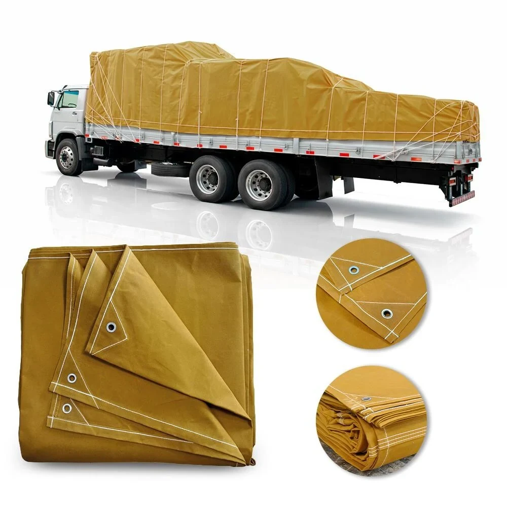
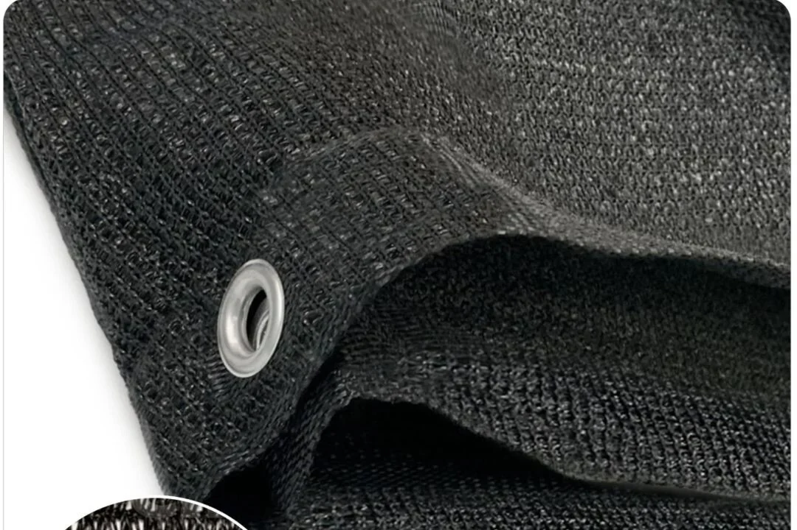
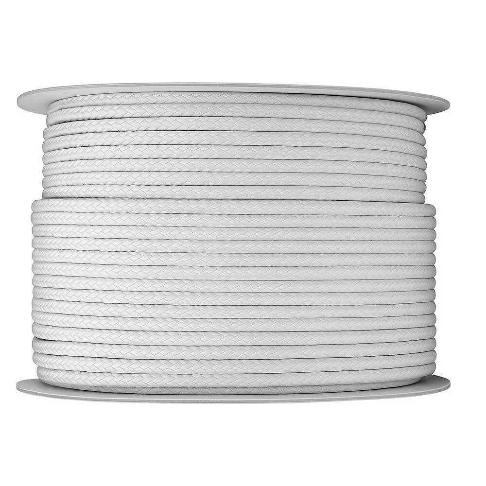

CK300 — polyethylene tarpaulin
Lightweight PE cover for freight protection. Dimensions, color and finishing on inquiry.
Truck tarpaulins, cargo containment nets, ropes and tie-down straps — a B2B range for transport and distribution.
Lightweight PE cover for freight protection. Dimensions, color and finishing on inquiry.

PVC truck cover for trailers and light commercial vehicles, specification on request.

PVC options for freight coverage; CK500 characteristics and availability require confirmation.

Waxed cotton canvas for freight covers, including thread 08 grades.

Black mesh for scrap, recycling and bulk cargo; mesh and dimensions on request.

Grey industrial net for freight protection; weight and application to be confirmed.

Polyester and other rope types, with various diameters and formats.

Tie-down straps with ratchets and hooks, plus load restraint accessories.
Genuine original product photographs. Suppliers are not publicly identified and availability is not presumed.
Provide product type, material, dimensions, thickness or fabric weight, color, fittings, quantity and destination. All specifications must be confirmed.
Cargo tie-down straps are not automatically suitable for lifting. Verify product-specific limits and applicable rules.